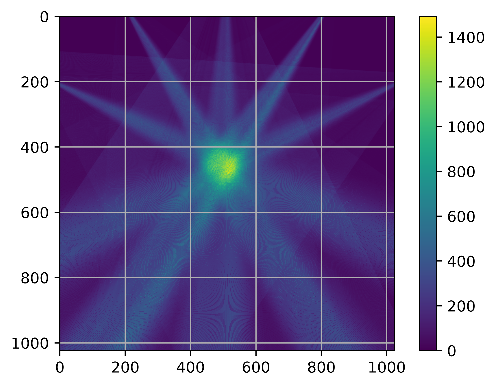
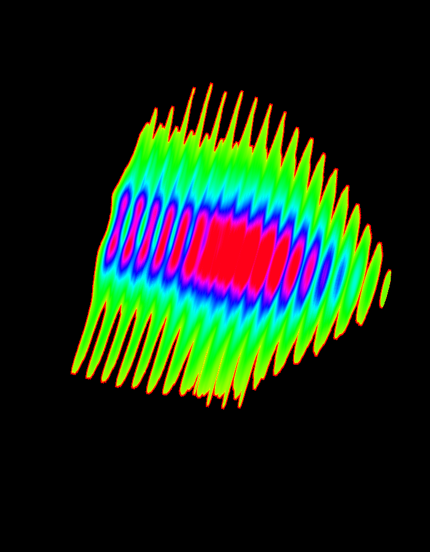

01
Line CCD Imaging
Visible-range line CCD cameras are used to record optical emission from the plasma along defined lines of sight.
EXPERIMENTAL DIAGNOSTICS
Development of a multi-view optical diagnostic system for non-invasive characterization and tomographic reconstruction of photon-emitting plasma.
DIAGNOSTIC DEVELOPMENT
Optical emission from a plasma contains spatial
information about the emitting region. By observing
the plasma along multiple lines of sight, these
projections can be combined to reconstruct its
internal two-dimensional structure.
The tomography system integrates optical imaging,
synchronized CCD acquisition and computational
reconstruction to provide a non-invasive approach
for investigating spatial variations in plasma
emission.

EXPERIMENTAL SYSTEM
The diagnostic system uses multiple line CCD cameras
positioned around the experimental region. Pinhole
optics are used to define the imaging geometry and
project the photon-emitting region onto the detector.
The cameras acquire complementary line-of-sight
measurements from different viewing directions.
These measurements form the projection data required
for subsequent tomographic reconstruction.
Visible-range line CCD cameras are used to record optical emission from the plasma along defined lines of sight.

Pinhole-based imaging establishes the projection geometry between the emitting plasma region and the CCD detector.

Multiple cameras provide projections from different viewing directions, allowing spatial information to be obtained from several perspectives.

Simultaneous acquisition of the optical projections enables measurements from different viewing directions to be correlated under comparable plasma conditions.
TOMOGRAPHIC RECONSTRUCTION
The acquired optical signals are processed to obtain
projection data corresponding to different viewing
angles. These projections are then used to estimate
the underlying two-dimensional emission distribution.
The computational framework is developed using
Python-based numerical and image-processing tools.
Different reconstruction approaches are investigated
to understand the influence of projection number,
geometry and experimental limitations.
RECONSTRUCTION METHODS

Direct back projection is used to distribute measured projection information across the reconstruction domain and obtain an initial estimate of the spatial emission distribution.

Projection data are filtered before back-projection to reduce reconstruction blurring and improve the representation of spatial features.

The magnet is linearly translated through the tomographic plane and using these projections, a 3D mapping of the Magnetic field is done
EXPERIMENTAL WORKFLOW
The tomography workflow begins with optical emission
from the plasma, followed by multi-view image
acquisition using CCD cameras and pinhole optics.
The recorded signals are then calibrated and processed
to obtain projection data.
These projections form the input to the tomographic
reconstruction algorithms, allowing the spatial
distribution of the emitting region to be estimated
and subsequently compared with experimental plasma
behaviour.
ONGOING DEVELOPMENT
Current development focuses on improving the
experimental geometry, increasing the number of
viewing directions and improving the accuracy of
tomographic reconstruction.
Future extensions will investigate time-resolved
measurements and the possibility of extending the
diagnostic from two-dimensional reconstruction towards
more complete spatial characterization of
photon-emitting plasma and beam-related phenomena.